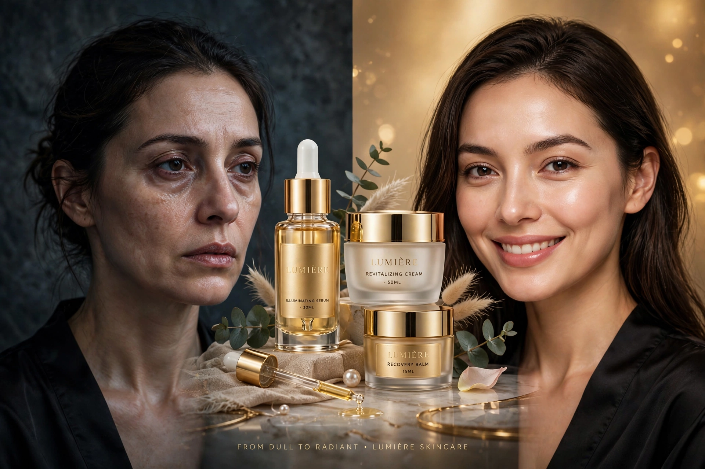

Prompt quảng cao so sanh sp skin
PROMPT QUẢNG CÁO SO SÁNH SP CORE CREATIVE DIRECTION Create a premium global beauty campaign combining luxury skincare advertising, high-fashion editor

Nội dung prompt
PROMPT QUẢNG CÁO SO SÁNH SP CORE CREATIVE DIRECTION Create a premium global beauty campaign combining luxury skincare advertising, high-fashion editorial cinematography and cinematic product photography. The film should feel high-energy, visually addictive and expensive, but never chaotic. The camera can move quickly and dramatically, while the subject and composition remain clear and readable. The visual story should progress naturally: PRODUCT → TEXTURE → MODEL → SKIN → PRODUCT → HERO Every shot must have one clear visual purpose. Every transition must visually connect to the previous shot. The product is the hero from beginning to end. PRODUCT ACCURACY — ABSOLUTE PRIORITY Use the uploaded image as the single source of truth for the product. Preserve the exact: • product shape • proportions • packaging • cap • colors • materials • finish • logo • typography • label layout • product name • visible text • branding • design details Do not redesign the product. Do not change the packaging shape. Do not invent additional branding. Do not remove text. Do not add text. Do not alter the logo. Do not create a similar-looking substitute. Do not change the product between shots. The product must maintain identical visual identity, proportions and physical construction throughout the entire commercial. Whenever the product is visible, it must remain recognizable as the exact uploaded product. SHOT 1 — MACRO PRODUCT IMPACT Open immediately on an extreme macro shot of the actual product. The camera rapidly tracks across the packaging surface at an elegant cinematic speed. Reveal fine material details, printed branding and realistic surface reflections. Use a narrow controlled beam of light traveling across the product. Perform a precise focus pull from the packaging texture toward the main product branding. Then execute a fast cinematic pull-back revealing the complete product standing upright on a premium reflective surface. The product remains perfectly stable and sharply recognizable. Purpose: immediately establish the product. SHOT 2 — PRODUCT TEXTURE Match-cut from a highlight on the packaging into an extreme macro shot of the actual skincare texture. Show the authentic physical texture of the product being dispensed onto a pristine reflective surface. The texture must have realistic: • viscosity • thickness • surface tension • reflections • movement • interaction with light Capture the texture folding, spreading or forming a smooth peak in elegant slow motion. The camera performs a controlled lateral tracking movement across the texture. Then reveal the actual product clearly positioned in the background. Purpose: make the viewer feel the product. Do not turn this into an abstract CGI liquid sequence. SHOT 3 — MODEL REVEAL Transition from the glossy highlight of the skincare texture into a macro shot of healthy human skin. Reveal an elegant high-fashion female model in a minimal luxury beauty environment. She naturally applies a small amount of the skincare product to her cheek. Start extremely close to the skin. Show realistic pores, subtle natural texture and believable skin movement. The camera smoothly pulls backward into a sophisticated beauty portrait. The model then turns naturally toward camera while holding the exact product from the reference image. The product must remain clearly visible. Natural expression. Minimal makeup. Elegant styling. Confident but understated presence. Purpose: connect the product to real human skin. SHOT 4 — KINETIC BEAUTY / PRODUCT INTERCUT Increase the energy. The camera performs a fast but controlled arc around the model. Her movement remains slow and natural while the camera moves dynamically. Cut between only three clearly defined compositions
Prompt cùng thể loại
- Lệnh ẩn chatgpt
/magazinecover → bìa tạp chí /newspaper → báo in /poster → poster điện ảnh /billboard → quảng cáo billboard…
- PHỤC CHẾ ẢNH CŨ
PHỤC CHẾ ẢNH CŨ PROMPT 1: PHỤC CHẾ ẢNH CŨ CÓ MÀU – GIỮ NGUYÊN 100% DANH TÍNH GỐC PROMPT PHỤC CHẾ ẢNH CŨ CÓ…
- Prompt AI Object to Heels - chan thanh giay
AI Object to Heels / Stepping Transformation - chân dẫm lên vật thể và biến hình thành giày cao gót. Prompt…
- Prompt Crystal Cutting
trend "Crystal Cutting ASMR" Prompt ảnh General: A luxurious apple sculpture completely covered in thousands…